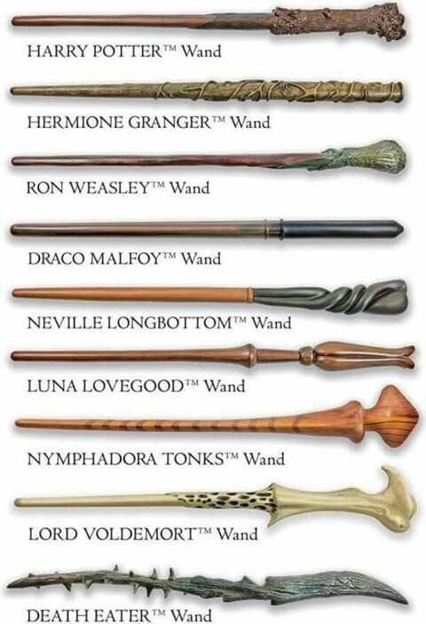

Wands
A wand is a quasi-sentient magical instrument through which a witch or wizard channels his or her magical powers to centralise the effects for more complex results. Most spells are cast with a wand, but some spells do not need a wand.
Wands are made and sold by wandmakers, the most famous being Ollivander in Great Britian adn Gregorovien in Eastern Europe.
Even though wands can have cores from the same creature or wood from the same tree, no two wands are alike.
The study of wands and their magical properties is called wandlore. Wandlore is a specific class of magic that refers to the history and magical properties of wands. The idea that a wand chooses the wizard or witch and can switch alligence is apart of wandlore.
Wands were developed at an unknown time in Europe and the Ollivander family started making them sometime after and earned a worldwide reputation for wandmaking.
Wand Wood Types
| Wood Type | Genus; Binomial Name |
|---|---|
| Acacia | (Acacia) |
| Alder | (Alnus) |
| Apple | (Malus Domestica) |
| Ash | (Fraxinus) |
| Aspen | (Populus) |
| Beech | (Fagus) |
| Blackthorn | (Prunus Spinosa) |
| Black Walnut | (Juglans Nigra) |
| Cedar | (Cedrus) |
| Cherry | (Prunus) |
| Chestnut | (Castanea) |
| Cypress | (Cupressaceae) |
| Dogwood | (Cornus) |
| Ebony | (Diospyros) |
| English Oak | (Quercus Robur) |
| Elder | (Sambucus) |
| Elm | (Ulmus) |
| Fir | (Abies) |
| Hawthorn | (Crataegus) |
| Hazel | (Corylus) |
| Holly | (Ilex) |
| Hornbeam | (Carpinus) |
| Larch | (Larix) |
| Laurel | (Laurus) |
| Maple | (Acer) |
| Pear | (Pyrus) |
| Pine | (Pinus) |
| Poplar | (Populas) |
| Red Oak | (Quercus Rubra) |
| Redwood | (Sequoiodeae) |
| Reed | (Poales) |
| Rosewood | (Dalbergia Nigra) |
| Rowan | (Sorbus) |
| Silver Lime | (Tilia Tomentosa) |
| Spruce | (Picea) |
| Snakewood | (Brosimum Guianense) |
| Sugar Maple | (Acer Saccharum) |
| Sycamore | (Acer Pseudoplatanus) |
| Tamarack | (Larix Laricina) |
| Vine | (Vitis) |
| Walnut | (Juglans Regia) |
| Willow | (Salix) |
| Yew | (Taxus) |
The wand woods Mahogany, Rosewood, Snakewood, Sugar Maple and Tamarack possess unknown properties and magical affinities.
Wand Core Types
| Unicorn Hair | Dragon Heartstring |
| Phoenix Feather | Veela Hair |
| Thestral Tail Hair | Troll Whisker |
| Kelpie Hair | Thunderbird Tail Feather |
| Wampus Cat Hair | White River Monster Spine |
| Rougarou Hair | Kneazle Whiskers |
| Horned Serpent Horn | Snallygaster Heartstring |
| Jackalope Antler | Basilisk Horn |
Most of the time the wand chooses the witch or wizard. When choosing the wand if the wielder is not suited for the wand nothing will happen when they pick it up. If the wand is a match a warm feeling may happen, as well as some of the time the wand will emit a few small sparks.
Wands are usually buried or burned if the owner dies. On the rare occasion the wand can take a new master if the previous owner is disarmed, stunned or killed. The wand sways it allegiance to whoever won. The Elder wand is the one and only wand that repects power. It can transfer allegiance at any time.
Some Notable Wand Owners
| Owner | Wood | Length | Core |
| Albus Dumbledore | Elder | 15" | Thestral Tail Hair |
| Bellatrix Lestrange | Walnut | 12 3/4" | Dragon Heartstring |
| Draco Malfoy | Hawthorn | 10" | Unicorn Hair |
| Harry Potter | Holly | 11" | Phoenix Feather |
| Hermione Granger | Vine | 10 3/4" | Dragon Heartstring |
| Ron Weasley | Ash | 12" | Unicorn Hair |
| Tom Riddle | Yew | 13 1/2" | Phoenix Feather |